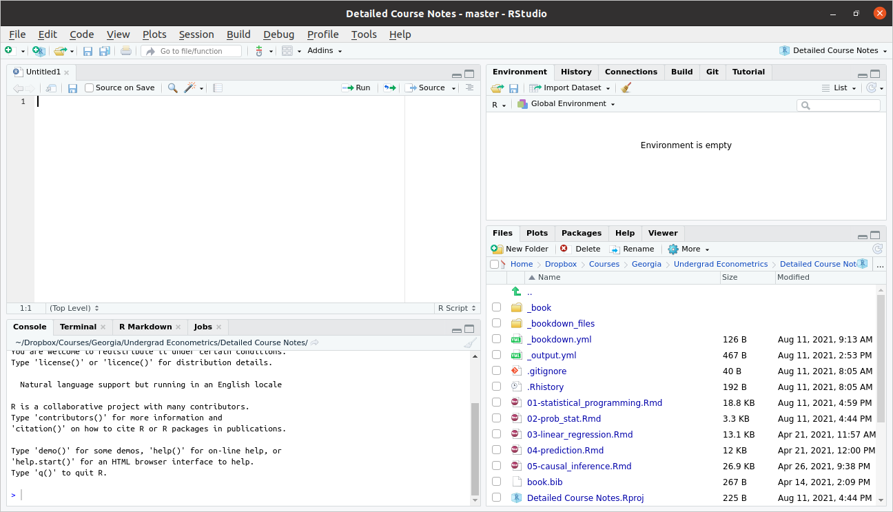

1+12 Introduction to R
We will learn a lot more about statistical programming this semester, but we’ll start with a crash course on R with the idea of getting you up-and-running.
I listed a few references in the Introduction, but this section will mostly follow the discussion in Introduction to Data Science: Data Wrangling and Visualization with R, by Rafael Irizarry. I’ll abbreviate this reference as IDS throughout this section.
IDS is not specifically geared towards Econometrics, but I think it is a really fantastic book and resource. In this section, I cover what I think are the most important basics of R programming and additionally point you to the references for the material that I cover in class. But I would strongly recommend reading all of the first 5 chapters of IDS over the next couple of weeks. We will basically only cover the first 5 chapters in our class, but the course should set you up so that the remaining 35 chapters of the book can serve as helpful reference material throughout the rest of the semester.
2.1 Setting up R
This section covers how to set up R and RStudio and then what RStudio will look like when you open it up.
2.1.1 What is R?
Related Reading: IDS 1.1
R is a statistical programming language. This is important for two reasons
It looks like a “real” programming language. In my view, this is a big advantage. And many of the programming skills that we will learn in this class will be transferable. What I mean is that, if you one day want to switch to writing code in Stata or Python, I think the switch should be not-too-painful because learning new “syntax” (things like where to put the semi-colons) is usually relatively easy compared to the “way of thinking” about how to write code. Some other statistical programming languages are more “canned” than R. In some sense, this makes them easier to learn, but this also comes with the drawback that whatever skills that you learn are quite specific to that one language.
Even though R is a real programming language, it is geared towards statistics. Compared to say, Matlab, a lot of common statistical procedures (e.g., running a regression) will be quite easy for you.
R is very popular among statisticians, computer scientists, economists.
It is easy to share code across platforms: Linux, Windows, Mac. Besides that, it is easy to write and contribute extensions. I have 10+ R packages that you can easily download and immediately use.
There is a large community, and lots of available, helpful resources.
ChatGPT
Your favorite search engine
StackOverflow
2.1.2 Downloading R
We will use R (https://www.r-project.org/) to analyze data. R is freely available and available across platforms. You should go ahead and download R for your personal computer as soon as possible — this should be relatively straightforward. It is also available at most computer labs on campus.
2.1.3 RStudio
Base R comes with a lightweight development environment (i.e., a place to write and execute code), but most folks prefer RStudio as it has more features. You can download it here: https://www.rstudio.com/products/rstudio/download/#download; choose the free version based on your operating system (Linux, Windows, Mac, etc.).
2.1.4 RStudio Development Environment
Related Reading: IDS 1.4
When you first open Rstudio, it will look something like this

Typically, we will write scripts, basically just as a way to save the code that we have written. Go to File -> New File -> R Script. This will open up a new pane, and your screen should look something like this

Let’s look around here. The top left pane is called the “Source Pane”. It is where you can write an R script. Try typing
in that pane. This is a very simple R program. Now, type Ctrl+s to save the script. This will likely prompt you to provide a name for the script. You can call it first_script.R or something like that. The only thing that really matters is that the file name ends in “.R” (although you should at least give the file a reasonably descriptive name).
Now let’s move to the bottom left pane. This is called the “Console Pane”. It is where the actual computations happen in R (Notice that, although we have already saved our first script, we haven’t actually run any code). Beside the blue arrow in that pane, try typing
2+2and then press ENTER. This time you should actually see the answer.
Now, let’s go back to the Source pane. Often, it is convenient to run R programs line by line (mainly in order for it to be easy for you to digest the results). You can do this by pressing Ctrl+ENTER on any line in your script for it to run next. Try this on the first line of your script file where we previously typed 1+1. This code should now run, and you should be able to see the result down in the bottom left Console pane.
We will ignore the two panes on the right for now and come back to them once we get a little more experience programming in R.
2.2 Installing R Packages
Related Reading: IDS 1.5
When you download R, you get “base” R. Base R contains “basic” functions that are commonly used by most R users. To give some examples, base R gives you the ability add, subtract, divide, or multiply numbers. Base R gives you the ability to calculate the mean (the function is called mean) or standard deviation (the function is called sd) of a vector of numbers.
Base R is quite powerful and probably the majority of code you will write in R will only involve Base R.
That being said, there are many cases where it is useful to expand the base functionality of R. This is done through packages. Packages expand the functionality of R. R is open source so these packages are contributed by users.
It also typically wouldn’t make sense for someone to install all available R packages. For example, a geographer might want to install a much different set of packages relative to an economist. Therefore, we will typically install only the additional functionality that we specifically want.
Example: In this example, we’ll install the dslabs package (which is from the IDS book) and the lubridate package (which is a package for working with dates in R).
# install dslabs package
install.packages("dslabs")
# install lubridate package
install.packages("lubridate")Installing a package is only the first step to using a package. You can think of installing a package like downloading a package. To actually use a package, you need to load it into memory (i.e., “attach” it) or at least be clear about the package where a function that you are trying to call comes from.
Example: Dates can be tricky to work with in R (and in programming languages generally). For example, they are not exactly numbers, but they also have more structure than just a character string. The lubridate package contains functions for converting numbers/strings into dates.
bday <- "07-15-1985"
class(bday) # R doesn't know this is actually a date yet[1] "character"# load the package
library(lubridate)
# mdy stands for "month, day, year"
# if date were in different format, could use ymd, etc.
date_bday <- mdy(bday)
date_bday[1] "1985-07-15"# now R knows this is a date
class(date_bday)[1] "Date"Another (and perhaps better) way to call a function from a package is to use the :: syntax. In this case, you do not need the call to library from above. Instead, you can try
lubridate::mdy(bday)[1] "1985-07-15"This does exactly the same thing as the code before. What is somewhat better about this code is that it is easier to tell that the mdy function came from the lubridate package.
2.2.1 A list of useful R packages
AER— package containing data from Applied Econometrics with Rwooldridge— package containing data from Wooldridge’s text bookggplot2— package to produce sophisticated looking plotsdplyr— package containing tools to manipulate datahaven— package for loading different types of data filesplm— package for working with panel datafixest— another package for working with panel dataivreg— package for IV regressions, diagnostics, etc.estimatr— package that runs regressions but with standard errors that economists often like more than the default options inRmodelsummary— package for producing nice output of more than one regression and summary statistics
As of this writing, there are currently 18,004 R packages available on CRAN (R’s main repository for contributed packages).
2.3 R Basics
Related Reading: IDS 2.1
In this section, we’ll start to work towards writing useful R code.
2.3.1 Objects
Related Reading: IDS 2.2
The very first step to writing code that can actually do something is to able to store things. In R, we store things in objects (perhaps sometimes I will also use the word variables).
Earlier, we used R to calculate \(1+1\). Let’s go back to the Source pane (top left pane in RStudio) and type
answer <- 1 + 1Press Ctrl+ENTER on this line to run it. You should see the same line down in the Console now.
Let’s think carefully about what is happening here
answeris the name of the variable (or object) that we are creating here.the
<-is the assignment operator. It means that we should assign whatever is on the right hand side of it to the variable that is on the left hand side of it1+1just computes \(1+1\) as we did earlier. Soon we will put more complicated expressions here.
You can think about the above code as computing \(1+1\) and then saving it in the variable answer.
Practice: Try creating variable called five_squared that is equal to \(5 \times 5\) (multiplication in R is done using the * symbol).
There are a number of reasons why you might like to create an object in R. Perhaps the main one is so that you can reuse it. Let’s try multiplying answer by \(3\).
answer*3[1] 6If you wanted, you could also save this as its own variable too.
2.3.2 Workspace
Related Reading: IDS 2.2
Before we move on, I just want to show you what my workspace looks like now.

As we talked about above, you can see the code in my script in the Source pane in the top left. You can also see the code that I actually ran in the Console pane on the bottom left.
Now, take a look at the top right pane. You will see under the Environment tab that answer shows up there with a value of 2. The Environment tab keeps track of all the variables that you have created in your current session. A couple of other things that might be useful to point out there.
Later on in the class, we will often import data to work with. You will notice the “Import Dataset” button that is located in this top right pane. I will suggest to you a different way of importing data in the next section, but this is also a way to do it.
Occasionally, you might get into the case where you have saved a bunch of variables and it would be helpful to “start over”. The broom in this pane will “clean” your workspace (this just means delete everything).
2.3.3 Importing Data
To work with actual data in R, we will need to import it. I mentioned the “Import Data” button above, but let me mention a few other possibilities here, including how to import data by writing code.
On the course website, I posted three files firm.data.csv, firm_data.RData, and firm_data.dta. All three of these contain exactly the same small, fictitious dataset, but are saved in different formats.
Probably the easiest way to import data in R is through the Files pane on the bottom right. But, in order to do this, you may need to change your working directory. We will do this using RStudio’s user interface in the following steps:
- First navigate to Sessions -> Set Working Directory -> Choose Directory. This will open a window that will allow you to choose the directory where you saved the data.
- Next, use the menu to navigate to the place where you saved
firm_data.csv. I created a folder~/Dropbox/Courses/Georgia/Undergrad Econometrics/24 Fall/firm data/and saved it there.
- Now, we have set the working directory, and this is what RStudio looks like for me. Notice that the working directory is now set to the folder where I saved the data. You can see the difference in the Files pane.
- Next, we will load the data, just by clicking it in the Files pane. I picked
firm_data.csv, but any of the three files will work.Ris quite good at recognizing different types of data files and importing them, so this same procedure will work forfirm_data.RDataandfirm_data.dtaeven though they are different types of files. Once you click it, you will get a screen that should look like this
- Click “Import” and the data should be imported. You can see that it is now in the Environment pane.
Next, let’s discuss how to import data by writing computer code (by the way, this is actually what is happening behind the scenes when you import data through the user interface as described above). “csv” stands for “Comma Separated Values”. This is basically a plain text file (e.g., try opening it in Notepad or Text Editor) where the columns are separated by commas and the rows are separated by being on different lines. Most any computer program can read this type of file; that is, you could easily import this file into, say, R, Excel, or Stata. You can import a .csv file using R code by
firm_data <- read.csv("firm_data.csv")An RData file is the native format for saving data in R. You can import an RData file using the following command:
firm_data <- load("firm_data.RData")Similarly, a dta file the native format for saving data in Stata. You can import a dta file using the following command:
library(haven) # external package for reading dta file
firm_data <- read_dta("firm_data.dta")In all three cases above, what we have done is to create a new data.frame (a data.frame is a type of object that we’ll talk about in detail later on in this chapter) called firm_data that contains the data that we were trying to load.
Side Comment: The assignment operator,
<-, is a “less than sign” followed by a “hyphen”. It’s often convenient though to use the keyboard shortcutAlt+-(i.e., hold downAltand press the hypen key) to insert it. You can also use an=for assignment, but this is less commonly done in R.